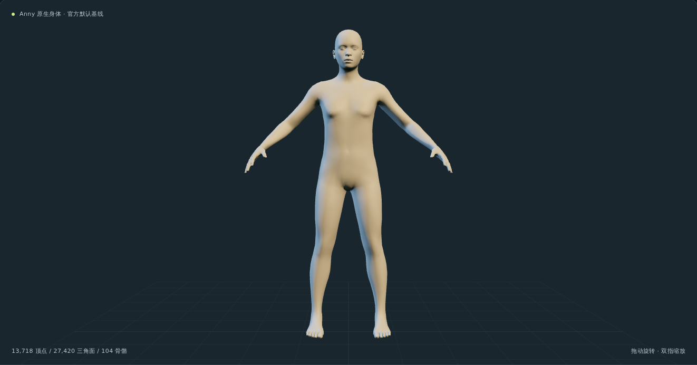
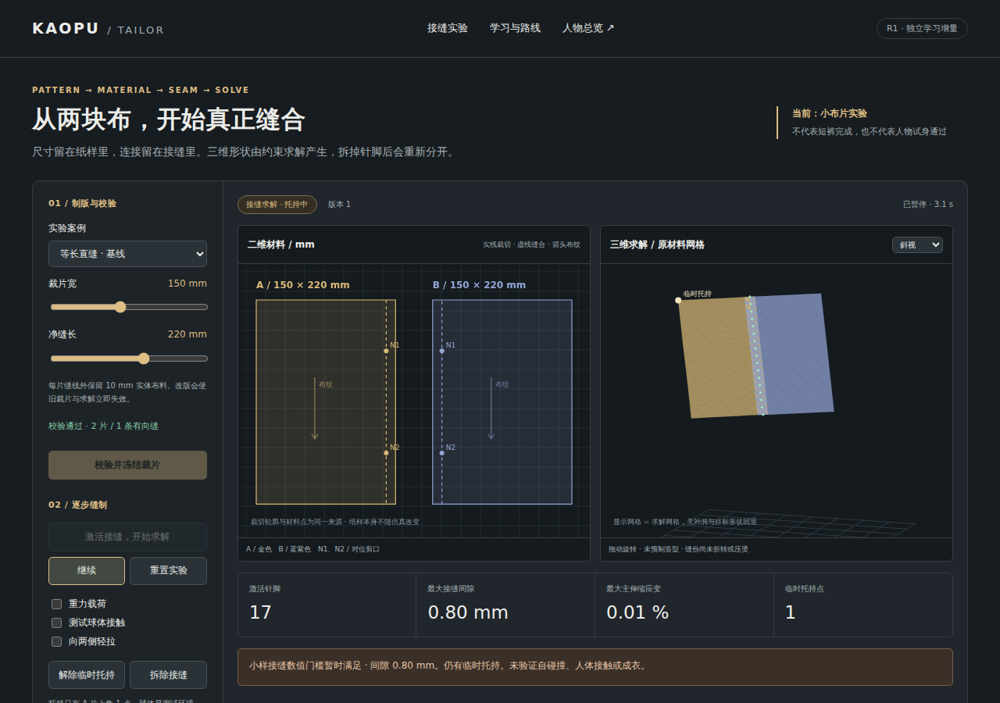

01FACE

GOOGLE GNM
捏脸 脸与表情
身份、表情统计参数 · 本地照片对照
HUMAN LAB / 01
点模型图进入。脸、体型、姿态，各有一个清楚的入口。
GOOGLE GNM
身份、表情统计参数 · 本地照片对照

ANNY
年龄、胖瘦与肌肉形态 · 全身姿态

META MHR
身份形体分量 · 骨骼姿态与手部


CLOTHING / 从布片开始
两块原创毫米布片，真实接缝约束。尚未完成整件服装或人体试身。
QUICK GUIDE
GNM 的身份与表情统计分量；目前不是“鼻宽”等命名旋钮。
Anny 的年龄、体重、肌肉等形态坐标；不是实际年龄或公斤。
MHR 的形体分量与骨骼参数，可调身体和手部姿态。
共同模型实验。GNM＋Anny已联动，MHR仅接入1个身份分量；尚未开放。
导入照片不会自动得到这个人的重建结果。当前 GNM R01 只做本地对照与手动编辑。
本页只显示模型实拍预览，不预加载三套三维运行时。点击后在同一标签页打开；工作台内的“返回人物总览”或浏览器返回键可回来。GNM R01 的“返回入口”仍回到它自己的首页。
“已验收”指注明版本的浏览器测试，不代表实体手机已经测试。模型来源及许可见各工作台。